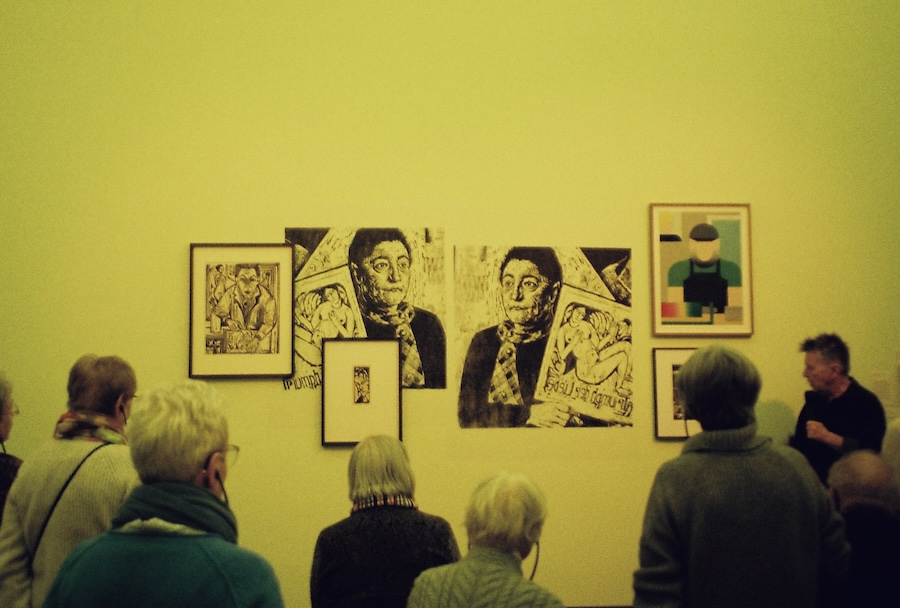
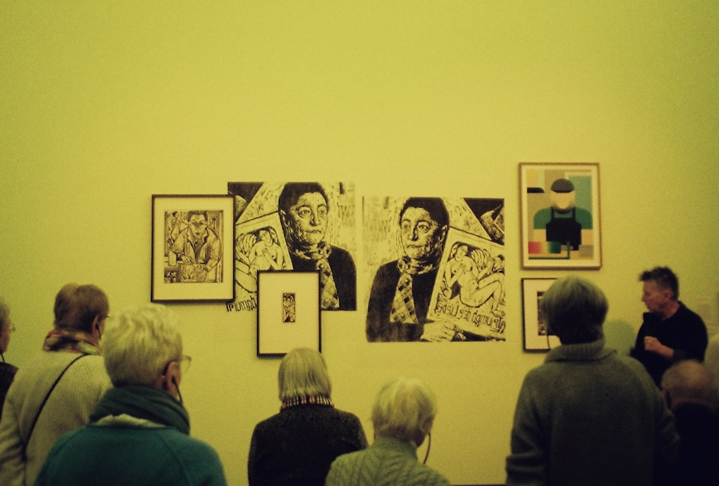

My skills
Through my studies I've learned how to use different designing and coding tools such as
- HTML, CSS and JavaScript
- Figma
- Adobe Illustrator
- Adobe Photoshop
- Adobe Lightroom
I'm always eager to learn more and improve my skills.
My name is Choice Johnson and I’m a second year Communication & Multimedia Design student at the University of Applied Sciences. Aspiring to learn all I can, I’m ready to embark on a long journey surrounded by design and the web.
Through my studies I've learned how to use different designing and coding tools such as
I'm always eager to learn more and improve my skills.
I love capturing interesting moments and details through analog film photography. Whether it’s a cool street scene, a beautiful landscape, or just everyday life, I enjoy experimenting with different angles and lighting to get the perfect shot. It’s a fun way for me to be creative and explore the world around me.
 

Love Me is an interactive website where the user needs to press buttons to regulate the heart.
This website was made with basic JavaScript code, as it was my first time programming.

Making this website was part of a personal development assigment. I followed a LinkedIn course covering the basics of CSS Grid. With the newly learned information, I made a simple website using the Grid technique. The photos used in this website were made and edited by me during my short trip to London.
For this frontend development assignment, I recreated the FC Hyena website from scratch. I also improved its accessibility by implementing both light and dark modes and ensuring compatibility with screen readers and other assistive technologies. You might recognize its layout, as I used it as the foundation for this portfolio website.
This Jujutsu Kaisen themed website was my first coding project. Using basic knowledge of HTML and CSS, I created a static website that displays information about the anime.
For this assignment, I created a multi-device interactive poster for Public City Jazz, designed in the house style of the Municipality of Rotterdam. Alongside the prototype, I also crafted a motion poster inspired by a song from one of the performing artists, using Adobe Illustrator.
For this Human Computer Interaction assigment I created an extension of the pinqponq website. In this extension users would be able to costumise a bag. 'pinq your ponq' was made in the original pinqponq house style. This static prototype was made using Adobe Illustrator.
For this project, I developed an app that helps residents of Amsterdam quickly find and reserve bike parking spots. The app provides real-time occupancy data and peak hours to improve availability. Additionally, I created a dashboard that processes reservation data, tracks usage trends, and offers insights for better management. This makes bike parking more efficient and data-driven.

Noteworthy is a dynamic social platform specially designed for music lovers and concert goers. It offers a comprehensive suite of features including personalised concert recommendations, a robust ticket marketplace, and an interactive community where user can share and explore their live music experiences. The Noteworthy prototype was made using Figma, combined with a basic web page for sharing purposes.
Hi there! My name is Choice Johnson. I’m 21 years old and currently studying Communication & Multimedia Design at the University of Applied Sciences in Amsterdam.
I’ve explored various paths in my studies, but I ultimately found my place at CMD Amsterdam, where I feel truly at home. My commitment to my education has been reflected in my Cum Laude achievement in the first year. Additionally, my internships at large corporations during previous studies have provided me with invaluable hands-on experience and have taught me many essential lessons.
In addition to being a full-time student, I work as a speciality coffee barista, a role that allows me to meet new people and help them.
Feel free to contact me, I would love to connect!